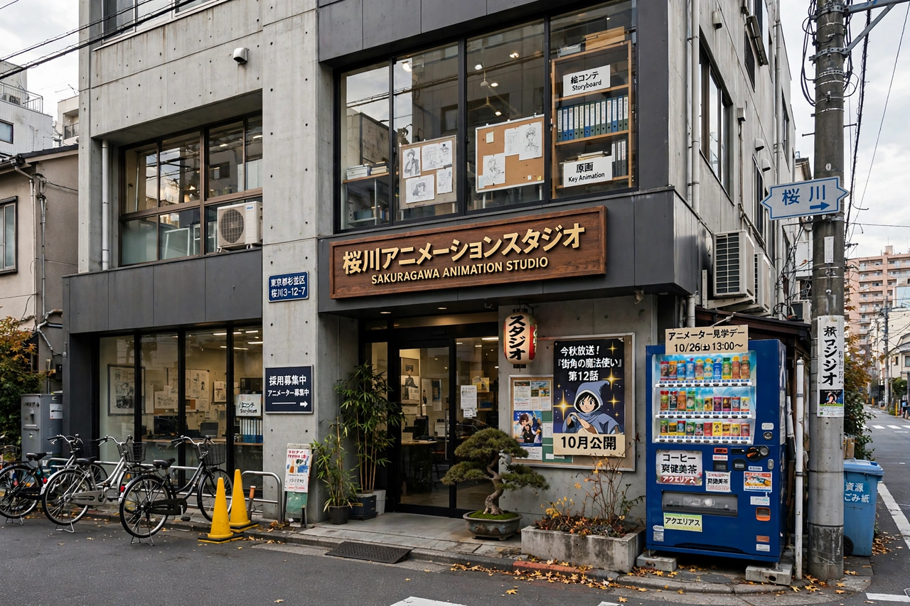

Toei Animation
Toei Animation Co., Ltd. (Japanese: 東映アニメーション株式会社) is a Japanese animation studio founded in 1948 as Japan Animated Films and acquired by the Toei Company in 1956, making it one of Japan's oldest and largest animation studios. It has produced many of the most successful anime series in history, including Dragon Ball, One Piece, Sailor Moon, Saint Seiya, Digimon, and Pretty Cure, and Pokémon-era competitors that defined global anime fandom for decades.

| Toei Animation Co., Ltd. | |
|---|---|
| Native name | 東映アニメーション株式会社 |
| Founded | 23 January 1948 (as Japan Animated Films) |
| Headquarters | Nakano, Tokyo, Japan |
| Parent | Toei Company |
| Industry | Animation production and licensing |
| Notable works | Dragon Ball, One Piece, Sailor Moon, Digimon, Pretty Cure |
History
Founded by animators including Kenzō Masaoka and Sanae Yamamoto, the studio was purchased by Toei in 1956 and renamed Toei Doga. Its feature The Tale of the White Serpent (Hakujaden, 1958) was the first colour anime feature film. The studio moved aggressively into television in the 1960s with series such as Sally the Witch and GeGeGe no Kitarō, trained a generation of masters — Hayao Miyazaki, Isao Takahata, and Leiji Matsumoto all worked at Toei — and exported its series worldwide, often through licensing arms in Los Angeles and Hong Kong.
Major productions
Toei's catalogue includes flagship long-runners: Dragon Ball and Dragon Ball Z (1986–1996, and later revivals), Sailor Moon (1992–1997), Yu-Gi-Oh! (1998), Digimon Adventure (1999), One Piece (1999–present, over 1,100 episodes), and the annual Pretty Cure franchise (2004–present). Its film One Piece Film: Red (2022) became one of the highest-grossing Japanese films worldwide. Toei operates production subsidiaries and overseas offices, licenses its characters extensively, and works alongside peers and rivals such as Sunrise and Kyoto Animation, with newer studios like MAPPA handling some of its properties.